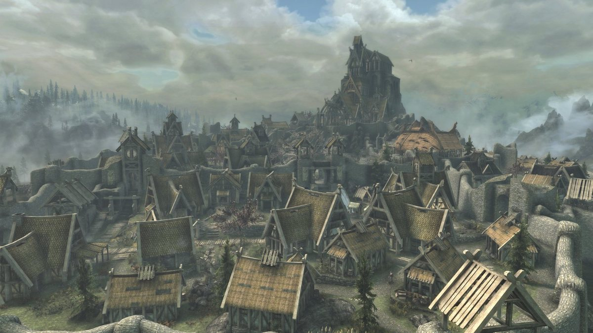

Дата народження: 06.10.2006.
Місце народження: Київський міський пологовий будинок №3.
Освіта: навчався у Середній загальноосвітній школі №72 Святошинського району м. Києва (не визнаю це місце як ліцей).
Зараз навчаюся у Національному технічному університеті України «Київський політехнічний інститут імені Ігоря Сікорського»,
Факультет інформатики та обчислювальної техніки.
Вайтран - велике торгове місто провінції Скайрим.
Розташоване серед просторих рівнин у центральній частині краю.
Місто запам'ятовується своєю теплою атмосферою і привітними громадянами(крім Назіма).
Також у місті багато місць інтересу, таких як Драконяча Межа, Йорваскр, Златолист та багато іншого.
